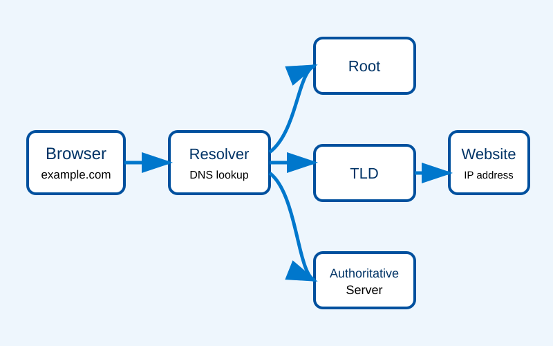

Domain Name
A readable website address such as example.com.
A responsive guide to the Domain Name System
The Domain Name System, commonly called DNS, translates human-readable domain names into numerical Internet Protocol addresses. Without DNS, users would need to remember the IP address of every website they wanted to visit.
This website explains the history, operation, security concerns, and major concepts of DNS. It also includes references and a self-assessment quiz.
Explore the DNS process
A readable website address such as example.com.
A numerical address used to identify a device or server on a network.
A service that looks up DNS information on behalf of a user.